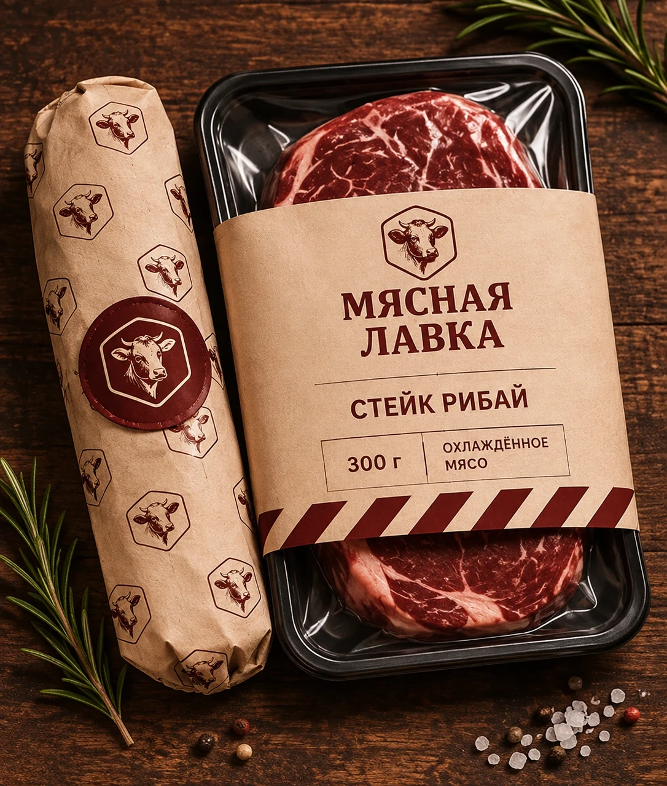
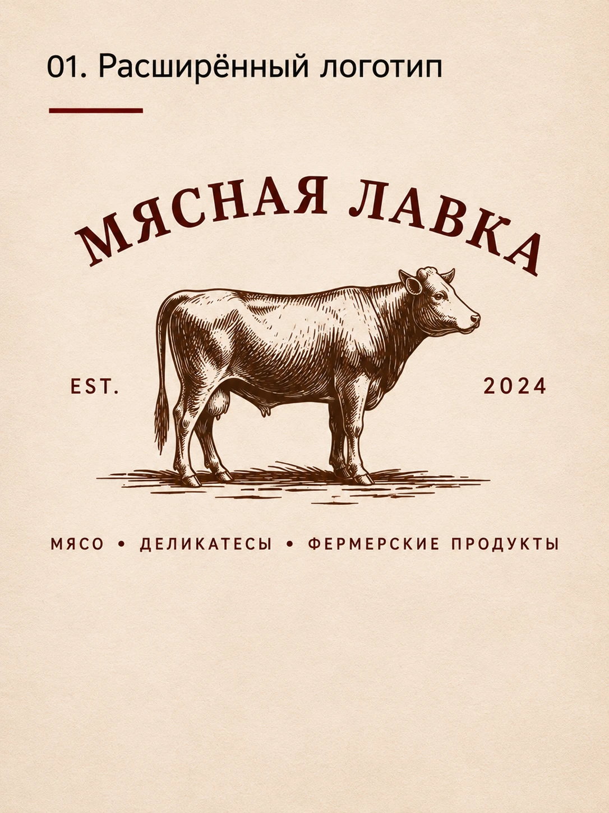
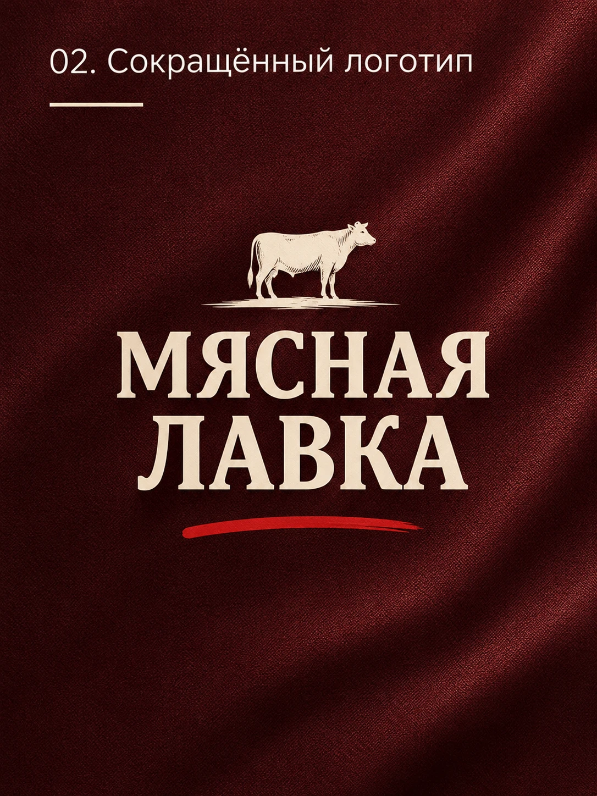
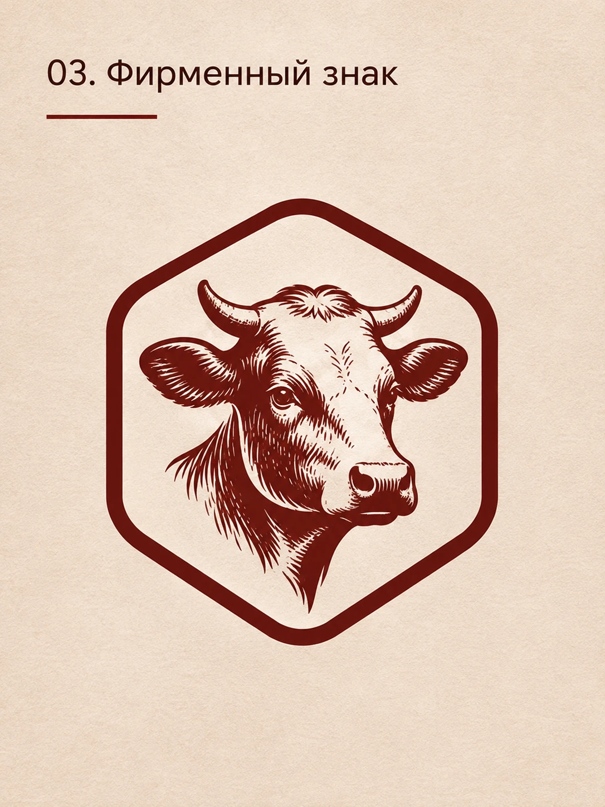
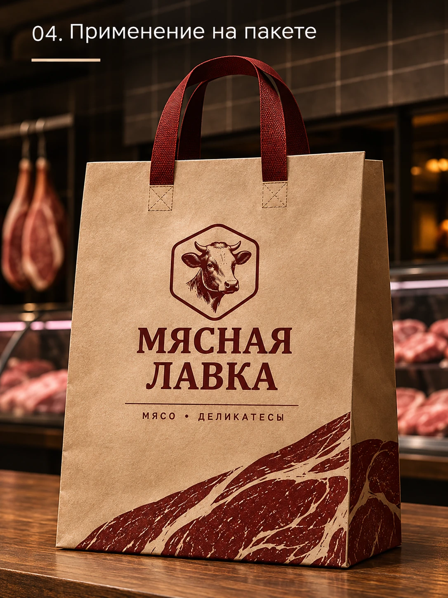
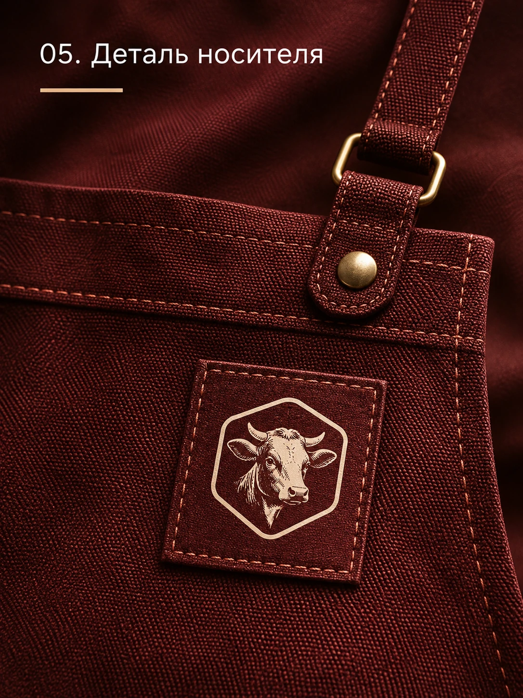
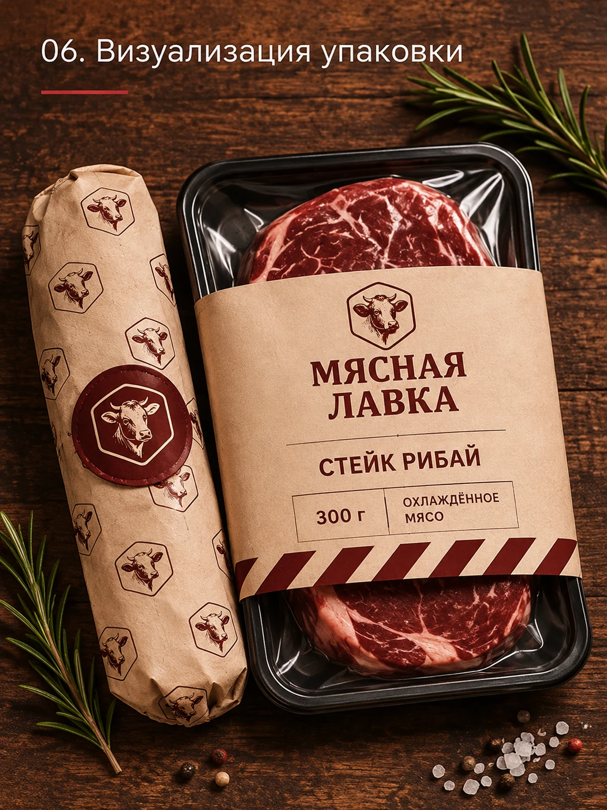
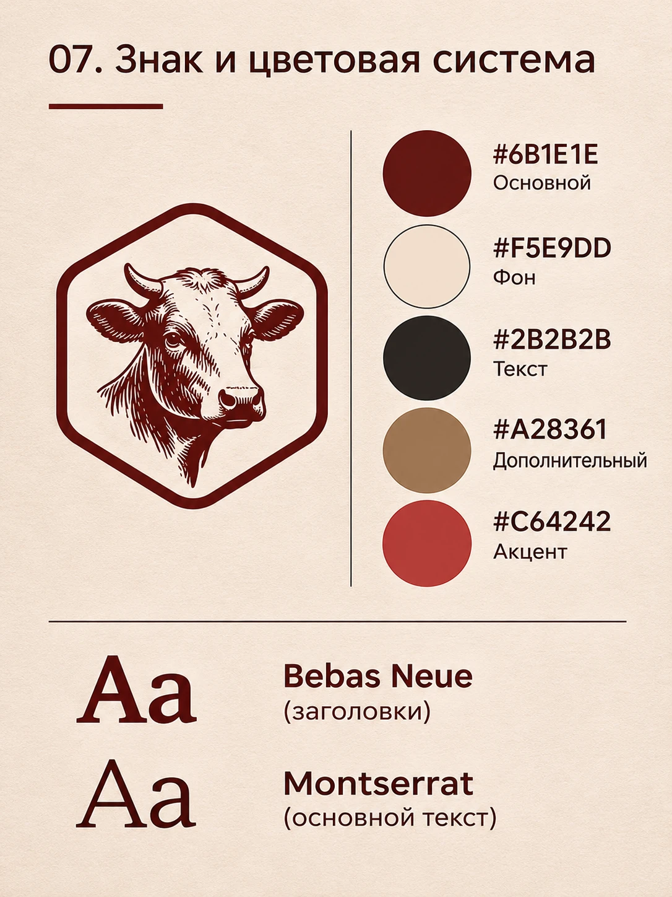
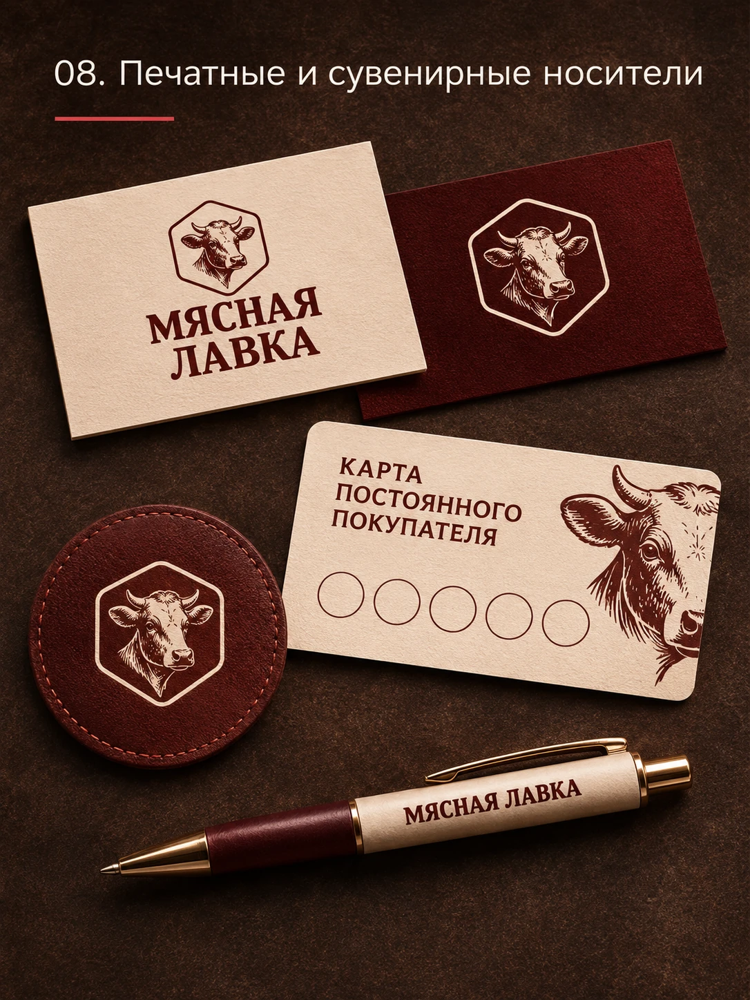

Задача
Разработать узнаваемый фирменный стиль мясной лавки и показать, как единая графическая система работает на упаковке, одежде сотрудников и печатных материалах.
Учебный проект / разработка айдентики
Фирменный образ мясной лавки с акцентом на традиционное качество, ремесленный характер и выразительную упаковку.

Архив проекта / Selected material
От разработки логотипа и фирменного знака к упаковке, униформе и печатным носителям.








В кейсе собраны концептуальные визуализации фирменных носителей. Они показывают предполагаемое применение айдентики и не являются фотографиями реализованной торговой точки.